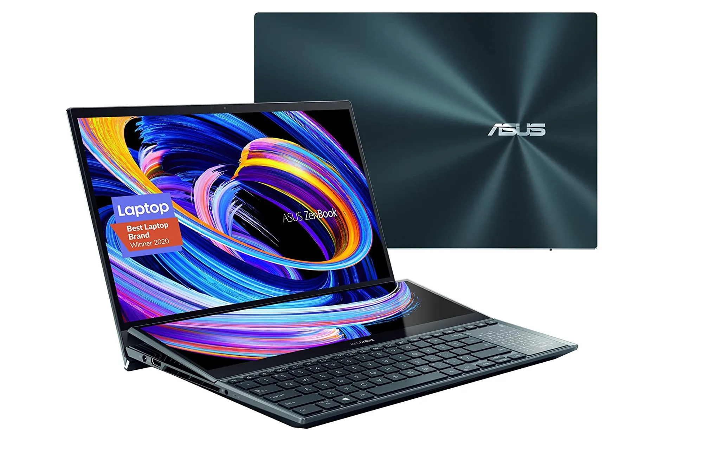
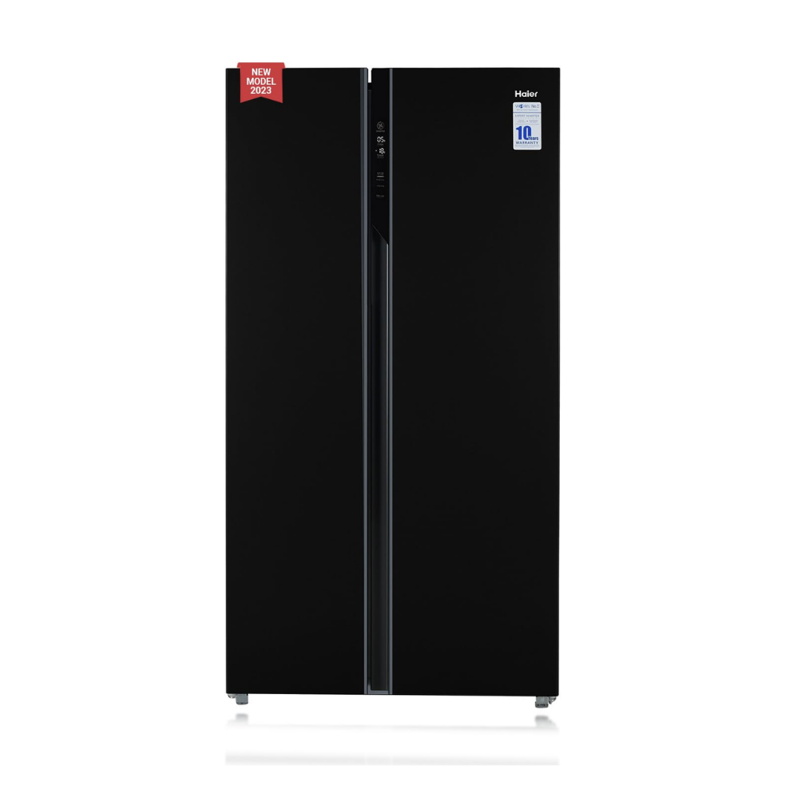

ASUS ZenBook Pro Duo 15 OLED UX582 Laptop

The ASUS ZenBook Pro Duo 15 OLED UX582 is a cutting-edge laptop designed to cater to the needs of the most
discerning consumers. It offers an exceptional blend of power, portability, and style, making it an ideal
choice for anyone looking for a premium ultrabook.
The ZenBook Pro Duo 15 OLED UX582 is equipped with the latest 15th generation Intel Core i7 processor, which
delivers incredible performance and efficiency. It is also available with a dedicated NVIDIA GeForce RTX
3060 graphics card, ensuring smooth gaming and content creation experiences.
View
more
Specification:
- 15.6-inch full HD+ OLED display
- Powerfull intel core i7 processor
- Dedicated NVIDIA GeForce RTX 3060 Graphics card
- Impressive Audio
- Slim and lightweight design
Haier 602 L Double Door Side By Side Refrigerators

The Haier 602 L Door Side By Side Refrigerator is a stylish and functional addition to any kitchen. This
energy-efficient refrigerator features a 602-litre ice maker and an electric compressor for smooth and
efficient cooling. The door side by side design provides easy access to food and a larger workspace.
View
more
Specification:
- Capacity: The refrigerator offers a spacious 602-litre capacity, ensuring there is enough room for all
your food and beverages.
- Door Side by Side Design: This innovative design provides a large, easy-to-clean workspace, while also
allowing for easy access to the fridge's contents.
- 602-litre Ice Maker: The refrigerator is equipped with a powerful 602-litre ice maker, ensuring you
always have fresh, cold water available for your needs.
- Energy Efficient: The Haier 602 L is designed to be energy efficient, with an A++ energy rating, which
means it consumes less energy than most refrigerators of its size.
- Adjustable Shelves: The refrigerator offers adjustable shelves, allowing you to customize the
organization of your food and beverages.
- Rated Life: The Haier 602 L has a 12,000-hour rated life, which means it will last for a very long time,
saving you money in the long run.